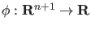
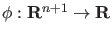
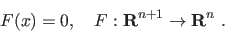
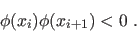
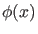

Next: Multiple test functions Up: Singularity handling Previous: Singularity handling Contents
The idea to detect singularities is to define smooth scalar functions which have regular
zeros at the singularity points. These functions are called test functions. Suppose we
have a singularity  which is detectable by a test function
.
Also assume we have found two consecutive points
which is detectable by a test function
.
Also assume we have found two consecutive points  and
and  on the curve
on the curve
|  | (23) |
|  | (24) |
Having found two points  and
and  one may want to locate the point
one may want to locate the point  where
where
 vanishes. A logical solution is to solve the following system
vanishes. A logical solution is to solve the following system
| (25) | |||
|  | (26) |